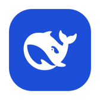

Windows · macOS 桌面托盘
dsh-systray
极简启动器
当前版本 v0.3.4 · 由 CI 自动构建发布
常规
关于
开机自启动
当前版本号v0.3.4
检查更新启动后 30s 静默
一键打开 Web UI127.0.0.1:3080
安静，但全能
系统托盘里的 DeepSeek Harness —— 无窗口拉起本地服务、进度可视化，设置窗口统一管理开机自启、版本号与检查更新，托盘图标随系统深浅色自动适配。
WHY DSH-SYSTRAY
为桌面而生，安静地工作
不弹窗、不占标签页，像系统原生的一部分。
托盘常驻
无窗口后台拉起本地 Web 服务，图标一望即知，不占任务栏。
设置窗口
左侧分类栏：开关开机自启、查看版本号、一键检查更新。
自动更新
启动 30 秒静默检查新版本，进度窗口下载，完成后自动重启。
主题自适应图标
托盘图标随系统深浅色自动切换，任何主题下都清晰可见。
安装说明
- 下载对应平台 zip 并解压到任意目录
- Windows：双击
dsh-systray.exe（SmartScreen 提示时选「仍要运行」） - macOS：首次右键 → 打开
dsh-systray，绕过 Gatekeeper - 首次启动约需 2-5 分钟完成环境部署，随后自动打开服务；配置保存在用户目录的
config.json